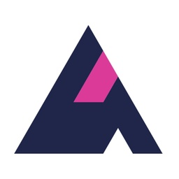

Pensionera Ad Preview
Facebook Feed
Creative review
Så här visas annonserna i ett Facebook-liknande flöde på dator och mobil.
Förhandsvisningen är en visuell simulering och är inte ansluten till Meta.